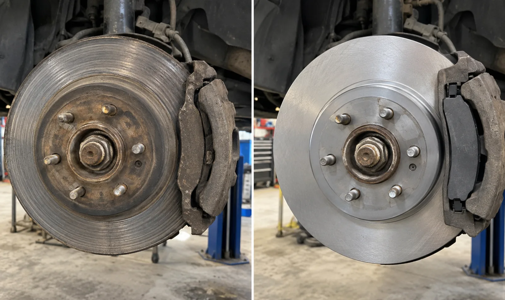

Noise
Squealing, scraping, grinding, or clicking when braking can point to worn or loose components.
Brake service and repair
Contact Jaden about brake noises, vibration, warning lights, weak braking, or common pad, rotor, and caliper work. He will review the request and confirm whether he comes to you or asks you to bring the vehicle to the Port Credit shop.
416-577-8237jadensauthoanddetailing@gmail.com
Brake concerns
Squealing, scraping, grinding, or clicking when braking can point to worn or loose components.
Pulsation, vibration, pulling, a soft pedal, or increased stopping distance should be assessed.
A brake or ABS warning light needs diagnosis before the correct repair can be determined.
Possible work
Mobile or shop
Suitable brake work may be completed at your location when the vehicle can be raised and supported safely on firm, level ground. Jaden may request the Port Credit shop when the repair needs different equipment, working space, or additional diagnosis.
Request an appointment
Include the vehicle’s year, make and model, its location, any warning lights, when the noise or vibration occurs, and whether braking performance has changed. If braking feels unsafe, do not continue driving the vehicle.
Request a quote
Jaden will confirm the service scope, location, and appointment directly.